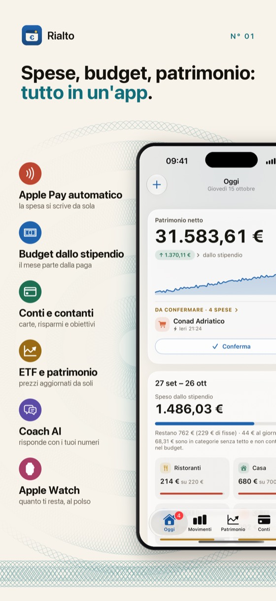
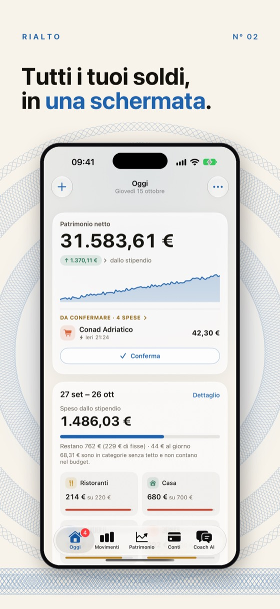
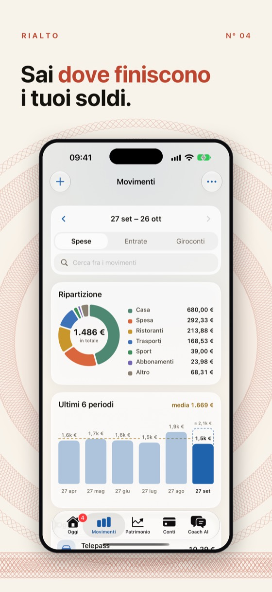
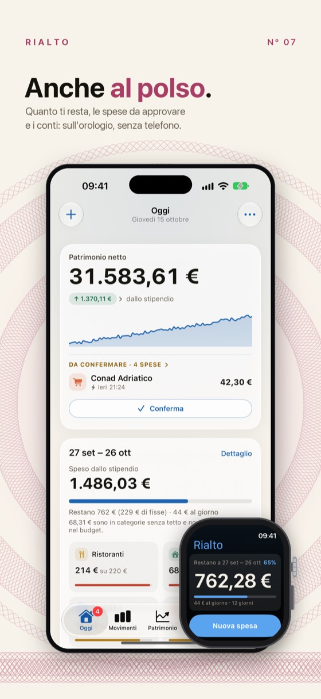

English
Paghi con Apple Pay e la spesa è già registrata.
Sul conto giusto, con la categoria indovinata, senza aprire l'app. Il budget parte dal giorno dello stipendio, e conti, carte, ETF e contanti stanno in una schermata sola.
Scarica sull'App Store
Gratis, con Rialto Pro facoltativo. Richiede iOS 26 o successivo.




Quello che fa
- Le spese pagate con Apple Pay si scrivono da sole, con un'automazione di Comandi che imposti una volta in tre minuti
- Il mese parte dalla paga, non dal primo: vedi quanto ti resta fino al prossimo stipendio
- ETF, azioni, obbligazioni, cripto e metalli con i prezzi che si aggiornano, e le cedole che si accreditano
- L'estratto conto della banca entra da CSV, Excel, OpenDocument o Numbers
- Su Apple Watch quanto ti resta da spendere, e i contanti si segnano girando la corona
Dove stanno i dati
- Sul telefono, e nel tuo iCloud se accendi la sincronizzazione
- Nessun account da creare, nessun server di Rialto: chi sviluppa l'app non riceve un solo numero
- Il coach con l'AI, se lo vuoi, gira sul dispositivo con Apple Intelligence